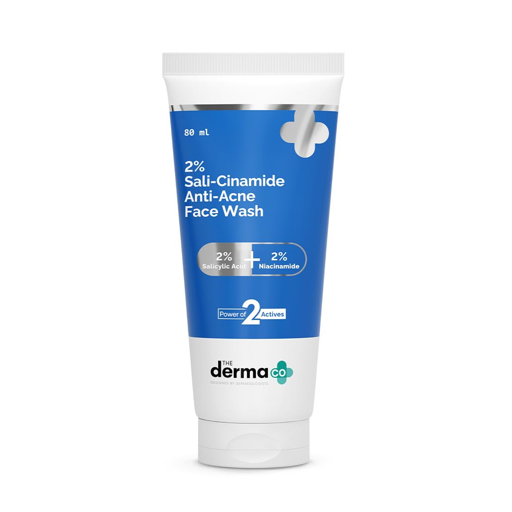
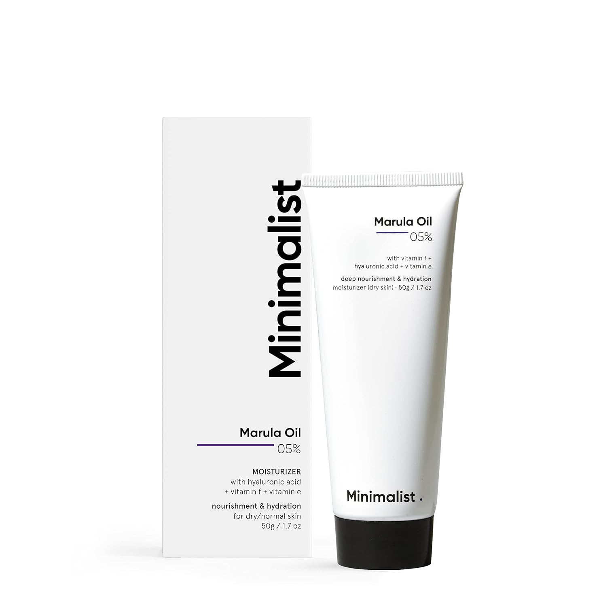
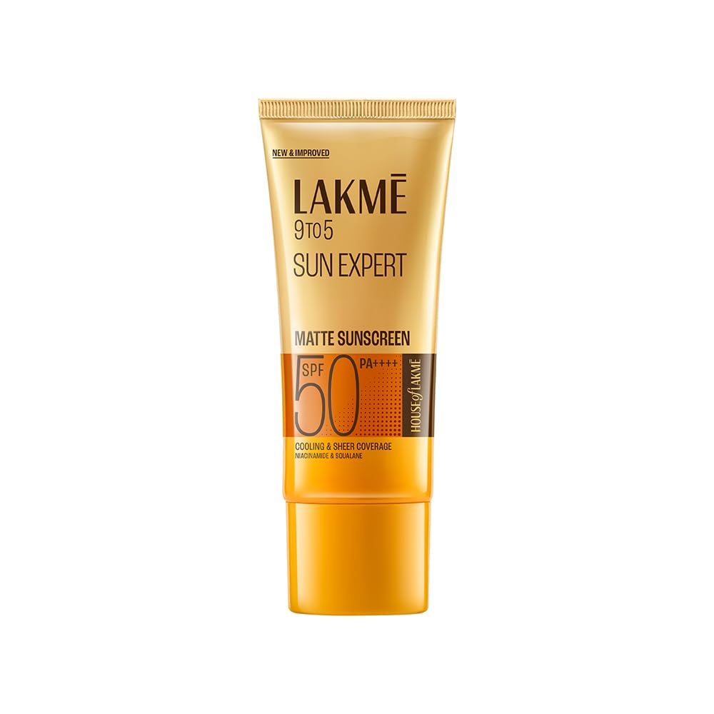
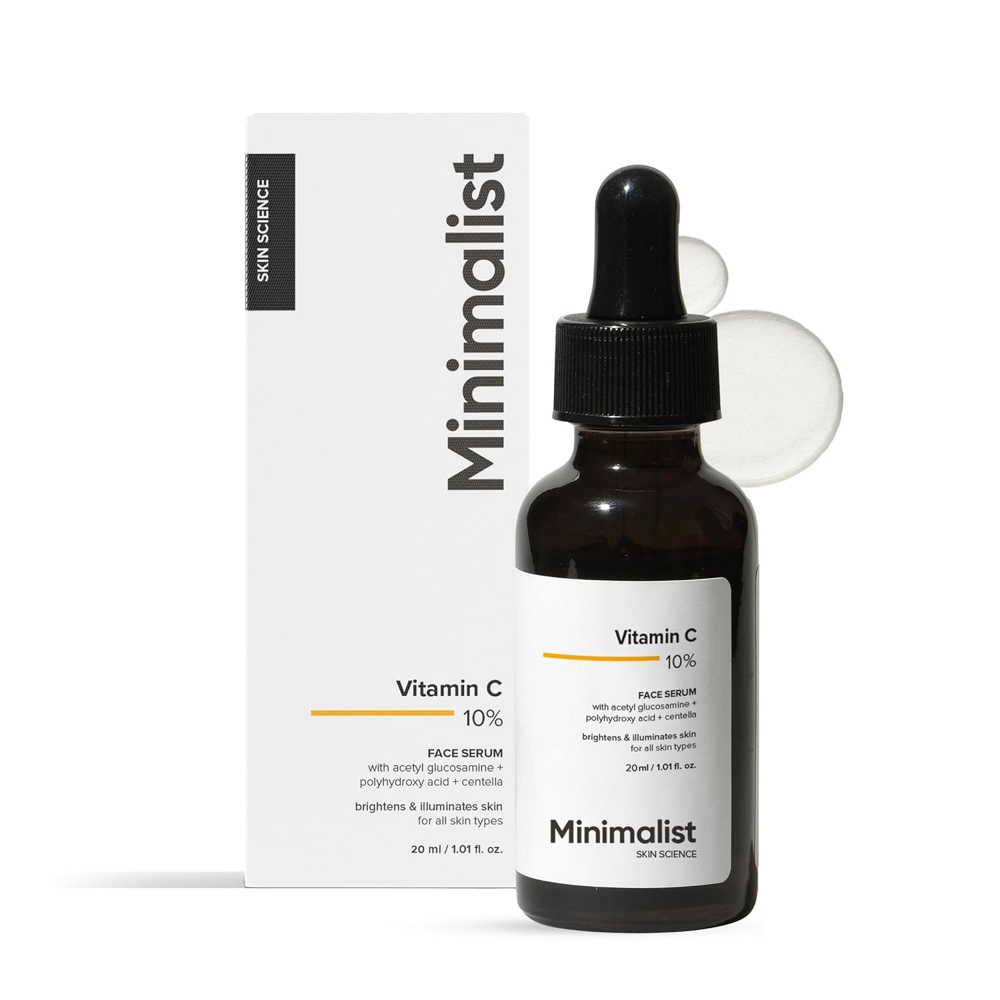
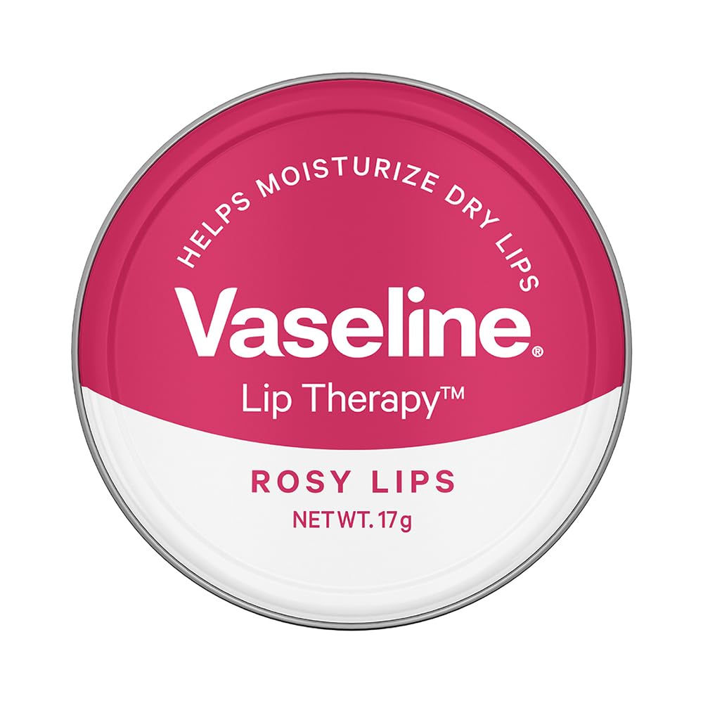

Top 5 Face Care Products
Honest Reviews & Buying Guide
1. Face Wash 🧼
Purpose:
Cleanses the skin by removing dirt, excess oil, sweat, makeup, and impurities.
Benefits:
- Removes dirt and oil from the face
- Helps prevent acne and pimples
- Unclogs pores
- Refreshes and brightens the skin
- Prepares the skin for moisturizer and sunscreen
2. Moisturizer 💧
Purpose:
Keeps the skin hydrated, soft, and protected by locking in moisture.
Benefits:
- Prevents dryness and flakiness
- Improves skin texture
- Strengthens the skin barrier
- Keeps skin soft and smooth
- Suitable for all skin types, including oily skin
3. Sunscreen ☀️
Purpose:
Protects the skin from harmful UVA and UVB rays that can cause sun damage.
Benefits:
- Prevents sunburn
- Reduces premature aging and wrinkles
- Helps prevent dark spots and pigmentation
- Lowers the risk of skin damage from UV exposure
- Essential for daily use, even on cloudy days
4. Vitamin C Serum 🍊
Purpose:
Brightens the skin and protects it from environmental damage using antioxidants.
Benefits:
- Brightens dull skin
- Reduces dark spots and acne marks
- Boosts collagen production
- Improves skin tone
- Protects against free radical damage
5. Lip Balm 💋
Purpose:
Moisturizes and protects the lips from dryness and cracking.
Benefits:
- Keeps lips soft and hydrated
- Prevents chapped and cracked lips
- Soothes dry or irritated lips
- Protects lips from harsh weather
- Some lip balms also provide SPF protection
Daily Skincare Routine
- 🧼 Face Wash – Clean your face.
- 🍊 Vitamin C Serum – Apply 2–3 drops.
- 💧 Moisturizer – Hydrate your skin.
- ☀️ Sunscreen – Apply SPF 30 or higher before going outside.
- 💋 Lip Balm – Keep your lips moisturized throughout the day.

Face Wash for Oil Skin
The Derma Co Sali-Cinamide Anti-Acne Face Wash with 2% Salicylic Acid & 2% Niacinamide - 80 ml | Clears Acne & Marks | Removes Excess Oil
Buy Now

Daily Moisturizer
Minimalist Marula Oil 5% Face Moisturizer For Dry Skin With Hyaluronic Acid For Deep Nourishment & Hydration, For Men & Women | 30 gm
Buy Now

SPF 50 Sunscreen
Lakme Sunscreen For Bright Skin, SPF 50 PA++++, Water Light, Niacinamide, In Vivo Tested,With New-Age UV Filters, Boosts Glow, Reduces Dullness & Dark....
Buy Now

Vitamin C Serum
Minimalist 10% Advanced Vitamin C Serum for Glowing Skin | Brightening & Dark Spot Treatment | Treats Uneven Skin Tone, Dullness & UV Damage | Daily Face Serum (Stable Vitamin C) | 30ml
Buy Now

Hydrating Lip Balm
Vaseline Lip Tins Rosy Lips, 17 g | Provides Hydration, Sheer Pink Tint & Glossy Shine
Buy Now